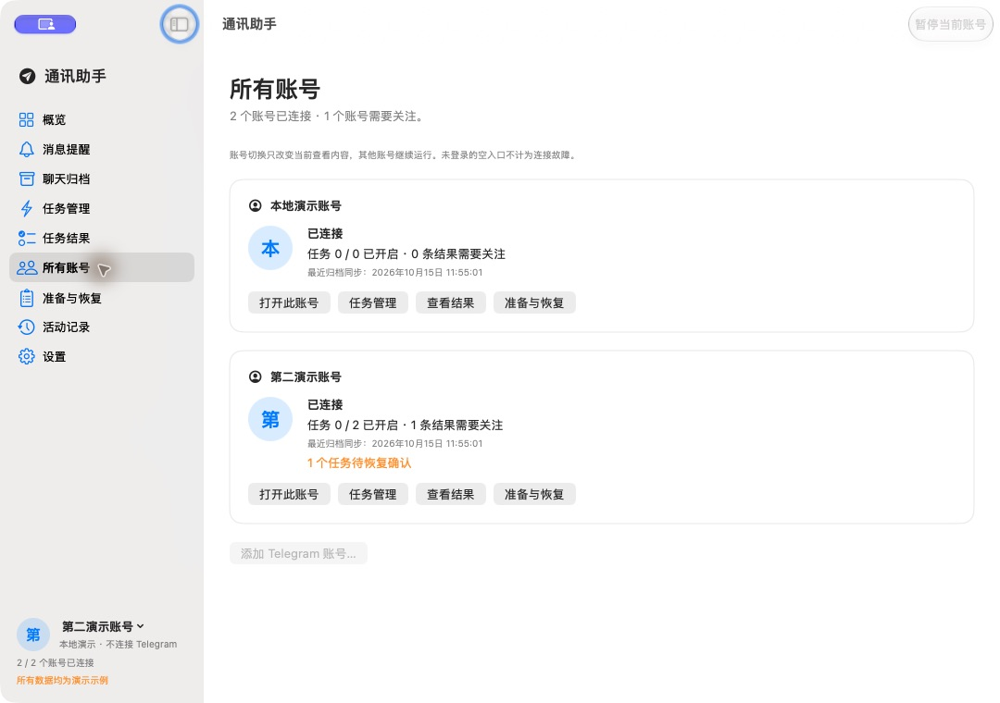
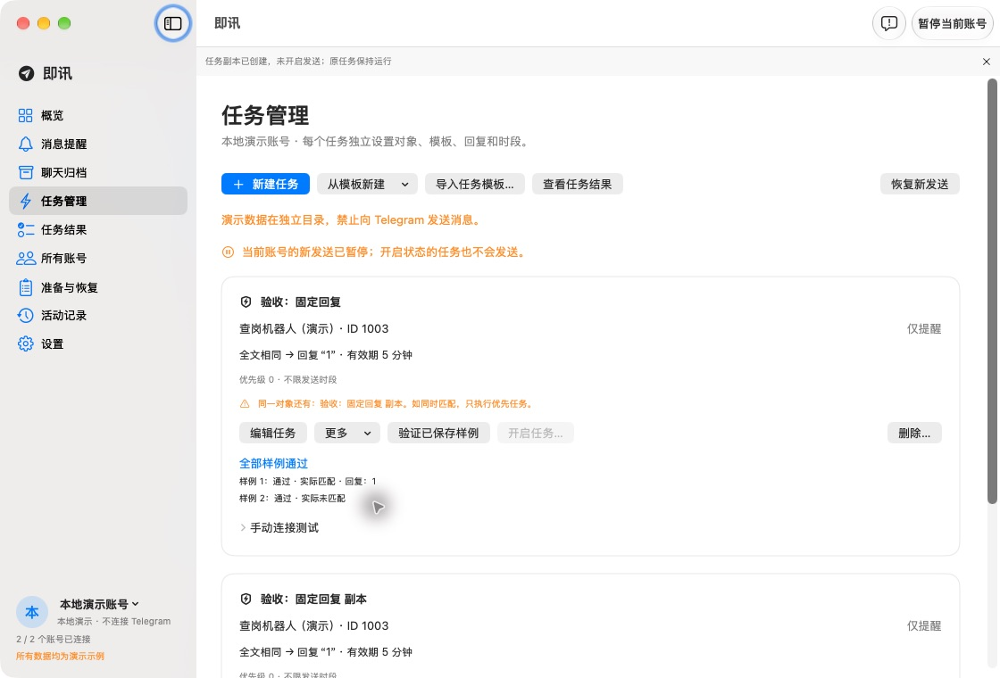
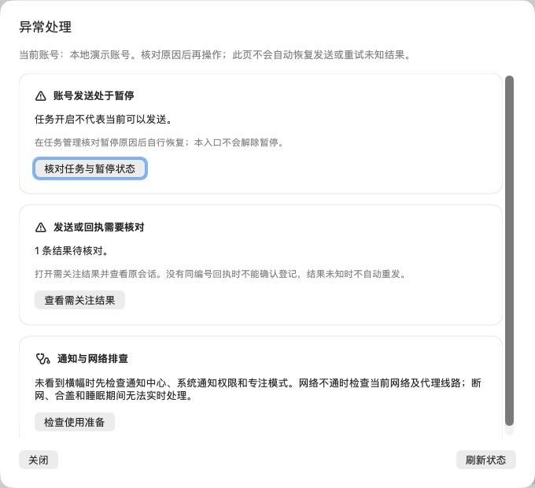
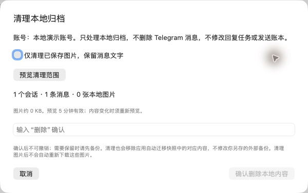

系统事件可读归档
入群、邀请、退出、移除和群组改名等事件保存为文字说明，支持搜索、上下文、导出与备份。实时和历史补档共用。
原生 macOS · Apple Silicon
重要消息及时提醒，工作记录按需保存。
多个账号独立运行，回复规则由你自己决定。

0.6.1 测试发布
入群、邀请、改名等群组系统事件保存为可搜索说明；旧空记录先预览、再按原消息逐批补全。已有账号、任务、网络与备份能力继续保留。
251 项 Python、82 项原生检查及隔离界面、迁移副本、打包引擎通过。本机两个原账号在线、两条原任务恢复，3条旧空记录全部补全，原有配置和账本保留。本轮按用户要求取消72小时观察及自动复查，长期稳定性未验证，历史中断时长不拼接。
0.6.1 新增能力
从实时归档到旧记录处理，每次补全都能先确认范围。
入群、邀请、退出、移除和群组改名等事件保存为文字说明，支持搜索、上下文、导出与备份。实时和历史补档共用。
区分群组系统事件、无说明图片和类型未记录的旧空内容。缺少身份时明确提示，未知事件不编造细节。
选择归档群组，检查旧空记录；确认后每批最多100条。只补平台仍返回、编号与日期一致的系统事件，不自动循环或重试。
保留账号、任务、归档开关、历史游标和发送账本。群组事件不触发自动回复，数据库保持schema5。



从消息到记录
一套原生界面完成设置，不用 Docker，也不用编辑环境变量。
头像与名称切换账号。提醒、归档、设备信息和回复规则分开保存，切换页面不会停止其他已登录账号。
系统权限和登录启动全应用共用私聊和群提及触发系统通知，可选来源语音、正文预览和静音时段。同会话连续消息合并提醒。
点击通知定位对应账号与消息文字、可选图片、编辑与删除状态。关键词、日期和发送者检索，查看上下文，按范围导出或备份。
默认不归档；可选密码加密业务备份先预览，再开启
选择机器人或明确允许的普通联系人，填写要匹配的提示和固定回复；也可以沿用查岗提示里的动态关键词。
每账号最多 50 个任务，仅直接私聊；支持可保存的提取模板与测试样例，不支持群聊自动回复、自由正则或脚本。
日常使用
按 PKG 向导安装到“应用程序”，打开后登录 Telegram 并确认身份。自定义 API 在高级设置。
在准备向导中测试提醒、选择归档。在任务管理保存模板和样例，预览通过后再确认开启。
关闭窗口继续运行，随时暂停或查看状态。退出应用会停止全部账号。
内部测试版
Apple Silicon · 声明最低 macOS 14
已在本机 macOS 27 验证，干净旧系统仍待验收。
PKG 安装向导，公开下载，无需 GitHub 登录。本轮72小时观察已取消，长期稳定性未验证，逐项结果见验收记录。当前仅供测试：安装器未签名、未公证，应用为临时签名，使用官方 TEST ONLY API；正式产品 API 及签名公证完成前，暂不面向普通用户正式推广。
使用边界
有内置配置的安装包只需登录 Telegram；自定义 API 放在高级设置。当前内部包使用官方测试配置，正式产品 API 待完成。
睡眠、合盖、退出应用或网络不可用时不能实时处理。可选防闲置睡眠不能覆盖主动睡眠或合盖，恢复后按时限规则处理新提示，不补发重启前旧消息。
不会。新对象或规则先保存为仅提醒，预览并确认后才启用。重启或身份恢复后，逐账号确认，再在准备与恢复向导中选择恢复原先开启的任务。固定回复默认本地有效期 5 分钟，可自定义。
编号模式需要匹配同编号登记回执。固定回复当前没有通用回执解析，只显示“已发送，登记未核实”，需要在原会话确认实际业务结果。
可以。在任务管理新建或编辑任务，匹配模板和测试样例分别保存。编号查岗选择“从提示提取关键词”，可从样例生成含编号、分钟数和关键词占位符的提取模板；关键词可随每条消息变化。修改执行条件只暂停该任务，其他任务保持运行。
资料保存在本机，按账号隔离，不上传到产品云端。Telegram 连接仍访问其服务。业务备份不含登录会话、API 或代理密码，可选密码加密；本地数据库和登录会话本身未额外加密。升级回退副本包含登录会话，仅留本机，不能分享。源码仓库不包含真实消息和凭据。
推荐双击 PKG，按“继续 → 安装”完成安装，再从“应用程序”打开即讯（原通讯助手）。为兼容旧安装，磁盘路径仍为 /Applications/通讯助手.app，资料目录和应用标识不变。系统可能要求管理员验证。升级前退出应用，安装器只替换应用，保留账号和资料；之后在准备与恢复向导中核对账号和原先开启的任务，再选择恢复。DMG/ZIP 为备用。设置中可检查官方更新，核对校验与备份后由系统安装器升级；不会自动静默替换应用。Intel、正式签名及公证尚未完成。
未通过。本轮按用户要求停止采样并取消自动复查，不再启动新版观察。历史未满时长不拼接，取消不等于稳定性通过；逐项功能验收见记录。
目前安装器尚未完成 Developer ID 签名与 Apple 公证，不能保证联网下载后顺畅安装。请核对 Release 来源与 SHA256，参考 Apple 官方说明；无需关闭系统安全保护。当前 PKG 已验证安装结构和向导，干净 Mac 的完整安装仍待验收。